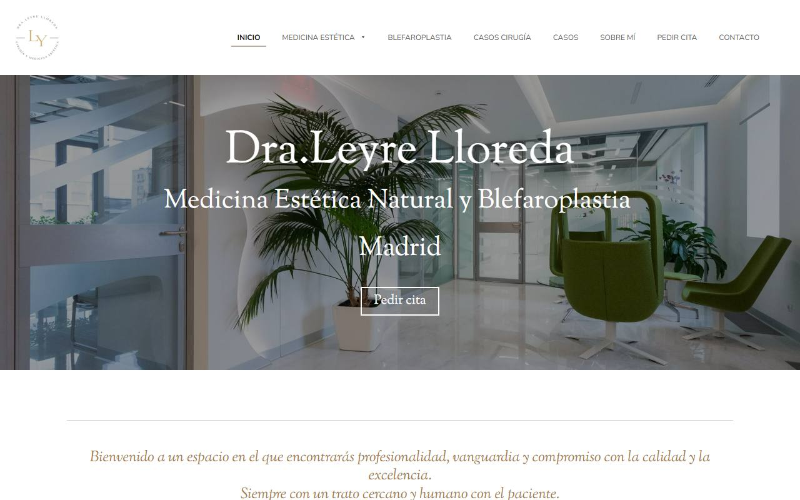
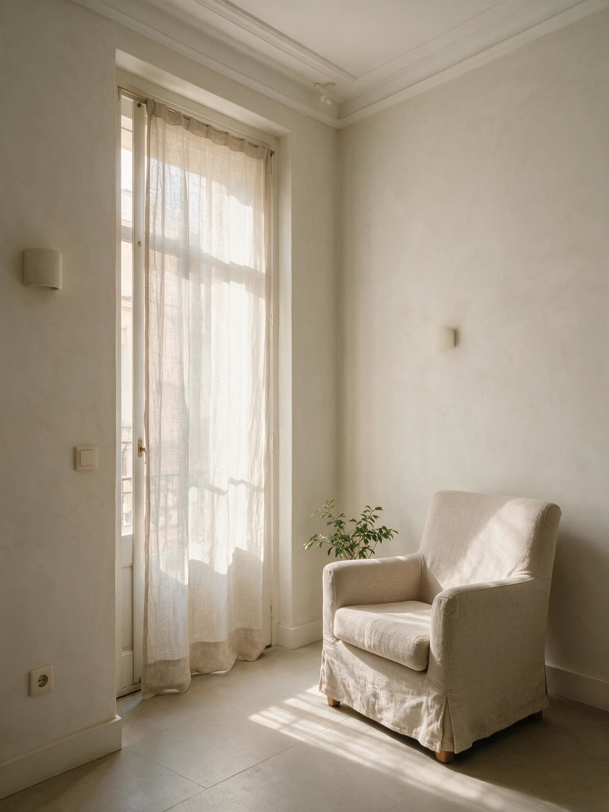
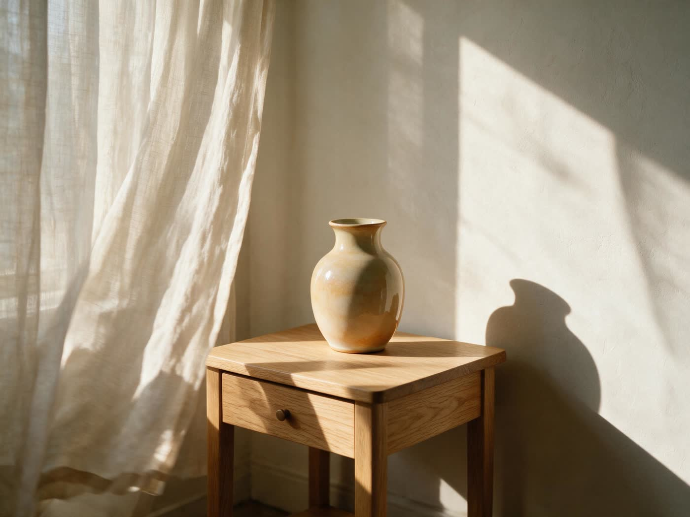

Arrugas de expresión
Frente, entrecejo y contorno de ojos. Suavizar la expresión sin borrarla: que sigas pareciendo tú, con la cara más descansada.
Consultar sobre este tratamientoMedicina estética facial · Chamberí, Madrid
Medicina estética facial que empieza por escucharte: valoración, plan y seguimiento con la doctora.
Su web hoy → la propuesta
Misma información, otra manera de contarla: sin medicamentos en portada, con su nº de colegiado y el registro sanitario en el pie, y pensada para el móvil.

Medicina estética facial · Chamberí, Madrid
Una trayectoria que se nota en lo que no se nota.
Medicina estética facial que empieza por escucharte: valoración, plan y seguimiento con la doctora.
Hablar por WhatsAppQuién te atiende
Dra. Leyre Lloreda lleva años dedicada a la medicina estética facial en Madrid. Su sello: resultados que nadie identifica como "hechos", porque el objetivo nunca fue cambiarte, sino devolverte.

Tratamientos
Frente, entrecejo y contorno de ojos. Suavizar la expresión sin borrarla: que sigas pareciendo tú, con la cara más descansada.
Consultar sobre este tratamientoTodos los tratamientos requieren valoración médica previa. La indicación, la técnica y el producto los decide la doctora en consulta.
Cómo trabajamos
Escuchamos qué te preocupa, analizamos tu rostro en reposo y en movimiento y revisamos tu historial. Salimos con un diagnóstico, no con una lista de la compra.
Un plan por escrito, con prioridades, tiempos y presupuesto cerrado antes de empezar. Si lo más sensato es esperar, te lo decimos.
Revisión a las dos semanas y ajuste si hace falta. Un tratamiento termina cuando tú y la doctora estáis de acuerdo en que el resultado es el correcto.
Confianza
5,0 ★ en Google
Valoración media pública. Puedes leerlas todas en Google →
Consentimiento informado en cada tratamiento
Sabrás qué se hace, con qué y qué esperar. Antes, no después.
Producto homologado y trazable
Solo producto sanitario con marcado CE, aplicado por médicos, con trazabilidad de lote.

La consulta
En Calle de Rodríguez San Pedro, 42, en pleno Chamberí. Consulta privada, sin salas de espera compartidas, con la agenda pensada para que ninguna cita pise a la siguiente.
Preguntas frecuentes
No lo sabes, y no tienes por qué. Para eso está la valoración: analizamos tu rostro, escuchamos qué te gustaría y te proponemos un plan, o te decimos que ahora mismo no hace falta nada.
Se notará que estás mejor; no se notará por qué. Trabajamos con técnicas conservadoras y preferimos completar en una segunda sesión antes que pasarnos en la primera.
La mayoría de los tratamientos faciales se realizan en consulta, en menos de una hora, con molestias leves y sin baja. Te lo explicamos caso por caso, porque depende del tratamiento y de tu piel.
Solo producto sanitario homologado (marcado CE) y, cuando el tratamiento lo requiere, medicamentos sujetos a prescripción, cuya indicación decide la doctora tras valorarte. Por normativa no publicitamos marcas ni medicamentos en esta web; en consulta te explicamos con detalle qué usamos y por qué.
El presupuesto se cierra en la valoración, por escrito y antes de empezar. Cada plan es distinto y por eso no publicamos tarifas: sería prometer un tratamiento antes de haberte visto.
En consulta, con el consentimiento expreso de cada paciente y siempre en su contexto. No publicamos imágenes de pacientes en la web: su intimidad vale más que nuestra publicidad.
Por WhatsApp o por teléfono. Te contestamos personalmente y te proponemos fecha para la valoración.
Tu valoración
Cuéntanos qué te gustaría y te proponemos día y hora para una valoración con la doctora. Sin compromiso de tratamiento.